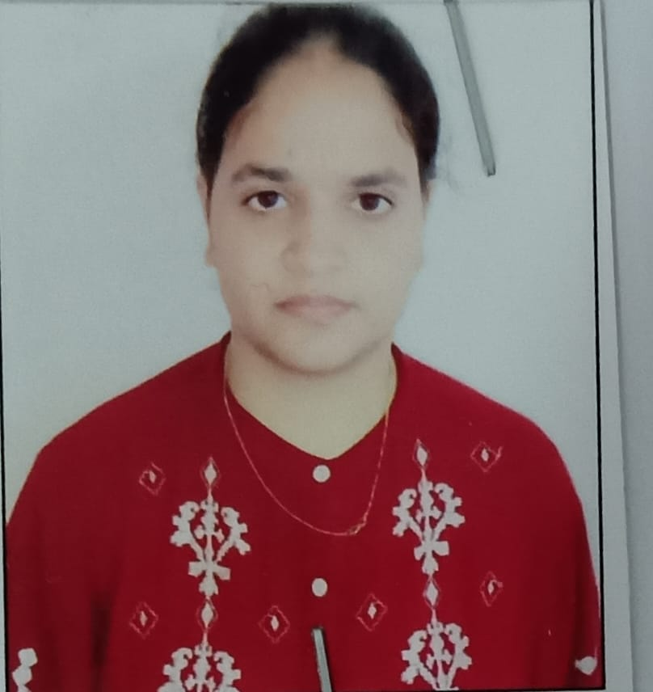

Manpreet Kour

Education:
- B.Tech(IT)->2022-2026
- J&K Board(Class XII)->2022->96.4%
- J&K board(Class X)->2020->96.4%
Experience:
USIP Intern,Software Engineering Dept,DTU
- Leading coordination, networking, and confidential data management with precision and diligence.
- Under the supervision of the Head of Department (HOD), demonstrated dedication to streamlined
workflow and data security by maintaining well-organized office files.
Academic Projects:
Lane Detection Project using OpenCV
- Created a Lane Tracker for an AI-Driven Car, utilizing OpenCV, NumPy, and other technologies
for advanced computer vision capabilities
Doctor Allocation &appointment using tracking system
- Smart India Hackathon 2023 Ideation
Skills
- Data Structures & Algorithms in C & C++ |Abdul Bari
- Front-End Web Development | Angela Yu
- Machine Learning Specialization | Andrew NG
- Python, OpenCV, Pandas, Numpy, TensorFlow, Keras, Matplotlib
POR:
Member,IEEE-DTU(TECH-SOCIETY)
- Successfully secured business partnerships by finalizing deals with companies and gathering
essential contact informations
Member,Society of Robotics-DTU
- Collaborating in a team dedicated to OpenCV projects and tasks
Extra-Curricular Activities And Achievements:
- Chosen to represent DTU at the Smart India Hackathon 2023
- Secured the top position in the 12th-grade examinations, earning the title of Jammu State
Topper
- Achieved success in multiple School and District-level debate competitions and demonstrated
proficiency in stage hosting
- Earned selection for the National Level Junior NASA Olympiad, showcasing exceptional
achievement in the field
- Served as a mentor in the Dekh Ke Mentor program, guiding government school students on
their career paths
- Secured victory in a district-level Kabaddi competition, showcasing prowess in the sport
- Led a band troop as a Commander, delivering notable performances at national events and
celebrations
Declaration:
I hereby declare that the details furnished above are true and correct to the best of my knowledge and belief.